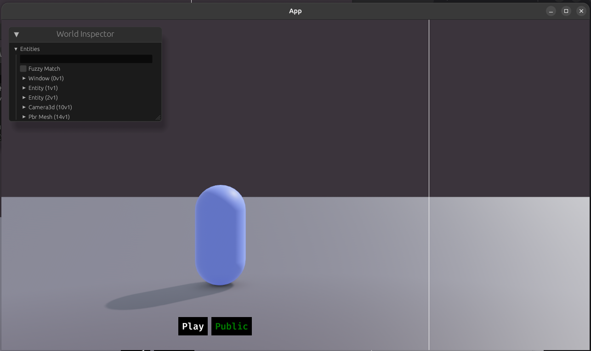
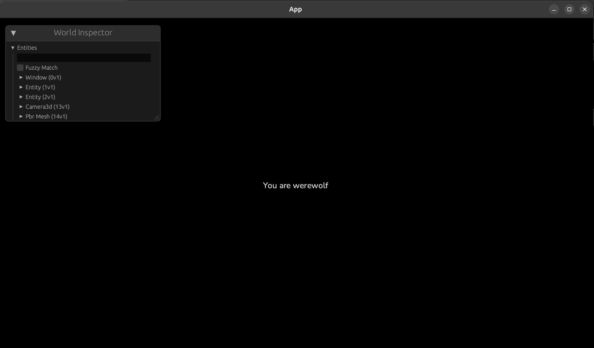

Devlog #2 - Deux ans plus tard : un prototype jouable, des galères… et un nouveau souffle
Table of content
Bonjour à toutes et à tous,
Il s’est passé presque deux ans entre le dernier post sur ce blog et celui que vous êtes en train de lire. Autant dire que ce n’est pas vraiment la régularité que j’avais promise à l’époque 😅

La vérité, c’est que durant cette période, il y a eu pas mal de choses compliquées côté perso, des changements de situation, des moments où il a fallu mettre le projet de côté… et d’autres où j’ai avancé par petites touches, souvent dans l’ombre. Mais malgré tout ça, Villager n’est pas mort. Bien au contraire.
Aujourd’hui, j’ai enfin quelque chose de concret à vous montrer : un prototype jouable. Et ce devlog est là pour vous raconter le chemin (parfois très chaotique) pour y arriver, les galères rencontrées, les choix que j’ai dû remettre en question, et surtout où en est le projet aujourd’hui.
Toujours Bevy, toujours Rust
Première chose importante : le moteur n’a pas changé ! Villager tourne toujours sur Bevy, en Rust.
Mais il faut bien comprendre une chose : en 2023–2024, Bevy n’était clairement pas là où il est aujourd’hui !
À l’époque :
- pas d'éditeur visuel
- la 3D avait encore beaucoup de lacunes,
- certains effets de lumière manquaient,
- l’outillage était parfois très brut,
- et beaucoup de choses demandaient… beaucoup de code à la main.
J’ai donc dû plonger assez profondément dans :
- le rendu 3D,
- la génération des scènes,
- l’affichage,
- la lumière,
- l’occlusion,
- le réseau
- chat vocal
- etc.
C’était formateur, passionnant et c'était exactement ce que je cherchais en commençant Villager. Mais il faut admettre que c'était aussi chronophage et pas compatible avec l'idée de "sortir un jeu".
La couche réseau : bienvenue dans la douleur
Ensuite est venue la partie réseau.
Et là, clairement, ce n’était pas mon terrain de jeu préféré à la base. Je me suis rendu compte qu'il y avait énormément de notions différentes qu'on détaillera dans un devlog dédié.
Dans Bevy, tout fonctionne par plugins. J’ai donc fini par trouver un premier plugin qui m’a aidé à poser une base de serveur temps réel, mais pour le reste… il a fallu tout faire à la main :
- réplication des entités,
- synchronisation des états,
- gestion des joueurs,
- sécurité minimale,
- etc.
À cela se sont ajoutées toutes les fonctionnalités “hors gameplay pur” :
- création de lobbies,
- gestion des utilisateurs et des listes d'amis,
- gestion des groupes d’amis,
- matchmaking simple (mais efficace),
- lancement automatique des parties dès qu’un nombre minimum de joueurs est atteint.
L’objectif était clair :
👉 cliquer sur “Jouer” et jouer, sans avoir à s’échanger des codes de lobby pendant 10 minutes.
Les mécaniques de jeu : étonnamment rapide
Une fois toute l’infrastructure en place, j’ai attaqué le cœur du jeu. Et contre toute attente, les mécaniques de gameplay ont été la partie la plus rapide.

Avec le design pattern ECS, la gestion des états, le scheduler et plein d'autres concepts de Bevy :
- déplacements des joueurs,
- spawn des joueurs,
- spawn des items,
- attribution des rôles,
- conditions de victoire / défaite,
- annonces in game,
- etc...
👉 tout ça m’a pris environ deux mois. ce qui est... honnête...
Comme quoi, quand les fondations sont solides, le gameplay suit assez naturellement !
Repenser le gameplay : moins d’aléatoire, plus de sens
En avançant, je me suis rendu compte d’un gros problème de conception.
À la base les villageois devaient fouiller la map afin de trouver des objets (Orbe de la Voyante, Épée du Chevalier, Arc de Cupidon, etc...) apparaissaient de manière totalement aléatoire.
Sur le papier, ça semblait cool. En pratique… c’était trop aléatoire.
Résultat :
- aucun point d’intérêt clair sur la map,
- un level design difficile à concevoir,
- et un gameplay peu intéressant pour les joueurs.
J’ai donc décidé de revoir ça en profondeur.
La solution : les PNJ
Plutôt que du full aléatoire, j’ai introduit des PNJ placés à des endroits précis de la map, avec une vraie réflexion sur la navigation et les zones clés.
Le principe est le suivant :
La partie se déroule sur une nuit, et à intervalles réguliers, certains PNJ « se réveillent ».
Lorsqu’un PNJ est réveillé, un villageois peut aller lui parler pour récupérer un objet.
Exemple concret :
La Voyante est présente dès le début, au village, mais elle dort. Après un certain temps, elle se réveille, et un joueur peut alors récupérer l’Orbe de la Voyante en interagissant avec elle.
Ce changement permet de créer des points d’intérêt sur la map, une navigation claire entre ces points, et oblige les villageois à se déplacer afin d’obtenir des objets. Cela permet également de créer des stratégies pour obtenir les objets ou, à l’inverse, piéger les autres joueurs.
Bevy évolue vite… très vite
Bevy est un moteur qui évolue très vite, avec une grosse mise à jour tous les trois mois environ.
Ce qui est très bien ! Les mises à jour sont conséquentes, et j’adore me prendre un café avec une petite madeleine devant le changelog, super bien rédigé et illustré. La communauté est grandissante, avec plein de plugins pour couvrir beaucoup de concepts qui pouvaient être manquants ou encore trop récents dans le moteur.
Ceci dit, j’ai écrit des tonnes de lignes de code (très formateur) qui aujourd’hui ne servent plus à rien, comme par exemple :
- la couche réseau (il existe maintenant des plugins qui gèrent quasiment tout),
- des éléments d’UI comme les champs de texte, qui n’existaient pas du tout au début,
- plein de shaders pour avoir des bordures, des arrondis ou de meilleurs effets 3D,
- et tous les changements de version en version de Bevy, car étant un moteur en cours de développement, la syntaxe change assez régulièrement.
Un prototype moche... mais complet !
Aujourd'hui d'un point de vue technique, le protype est terminé. J’ai même pu faire quelques tests avec mon cercle d'amis. Les resultats sont positifs et ça fait du bien après tant de galères !!



Visuellement, ce n’est pas fou du tout : on est sur des tic-tac et des blocs gris. Mais la boucle de gameplay est complète, tout comme la gestion des groupes, le matchmaking et le chat vocal de proximité (qui a été une purge à développer !).
Le vrai mur

Une fois le prototype fini, il était temps de chercher une direction artistique et cette partie m'a pris... des mois. Littéralement.
pourquoi !?
Et bien, j'ai certe des bases en dessin, des bases en modélisation 3d mais ce n'est ni mon métier, ni ma passion ! Et entre les concepts art, la modélisation 3d, les animations, la recherche d'un style cohérent et personnel, c'était beaucoup trop pour moi...
Resultat : démotivation, stagnation, et très peu de code écrit pendant près d'un an.
Le virage : de la 3D à la 2.5D
Après pas mal de remises en question, j’ai changé d’approche.
Je suis passé par une idée de vue 2D top-down façon RPG (pokemon ou viexu Zelda), puis finalement à un entre-deux : la 2.5D.
Le principe :
- un environnement en 3D (pour la lumière, les ombres, la profondeur),
- des assets en 2D (sprites sur des plans verticaux).
c'est un style qu’on peut retrouver dans des jeux comme Cult of the Lamb ou Don’t Starve que j'adore.


j'ai donc commencé à designer ma map, les points d'intérêt, créer quelques assets (je détaillerai mon process de création dans un devlog) et aujourd’hui, j’ai :
- une direction artistique qui me plaît et qui me ressemble,
- quelque chose de cohérent,
- et surtout… l’envie de continuer.

Conclusion
Deux ans plus tard :
- Villager est toujours en vie,
- le prototype est terminé,
- la direction artistique est enfin trouvée,
- et la motivation est revenue.
Merci encore de me suivre, et à très vite dans le prochain devlog dans deux ans ! (je rigole 😅)
Dylan